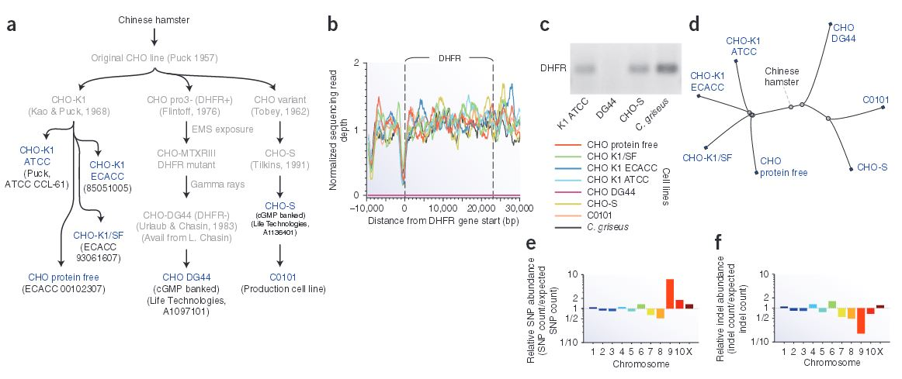

Chinese hamster ovary (CHO) cells, first isolated in 1957, are the preferred production host for many therapeutic proteins. Although genetic heterogeneity among CHO cell lines has been well documented, a systematic, nucleotide-resolution characterization of their genotypic differences has been stymied by the lack of a unifying genomic resource for CHO cells. The Betenbaugh lab has been involved in reporting a 2.4-Gb draft genome sequence of a female Chinese hamster, Cricetulus griseus, harboring 24,044 genes. We also contributed to the resequencing and analyzing of the genomes of six CHO cell lines from the CHO-K1, DG44 and CHO-S lineages. This analysis identified hamster genes missing in different CHO cell lines, and detected >3.7 million single-nucleotide polymorphisms (SNPs), 551,240 indels and 7,063 copy number variations. Many mutations are located in genes with functions relevant to bioprocessing, such as apoptosis. The details of this genetic diversity highlight the value of the hamster genome as the reference upon which CHO cells can be studied and engineered for protein production.
Lewis, Nathan E., Xiu Liu, Yuxiang Li, Harish Nagarajan, George Yerganian, Edward O'Brien, Aarash Bordbar, et al. "Genomic Landscapes of Chinese Hamster Ovary Cell Lines as Revealed by the Cricetulus Griseus Draft Genome." Nature Biotechnology 31, (2013): 759-765.
© 2014 Johns Hopkins University